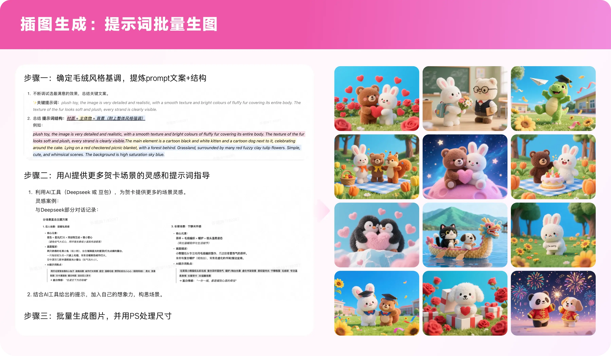
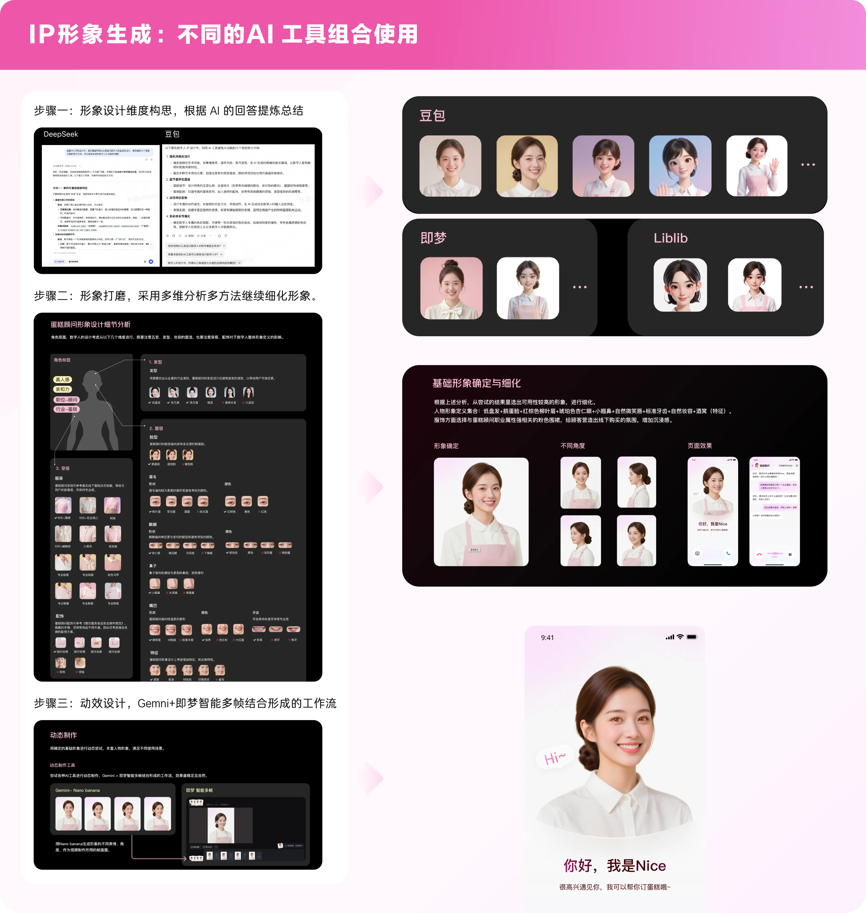

同一个平台，蛋糕用户的
决策逻辑和点餐用户完全不同
调研数据揭示了一个关键差异：蛋糕用户关注的是商品本身，而不是哪家店。这个洞察是整个设计策略的起点——展示逻辑和用户决策模型的错配，才是品类增长的真正天花板。
以店铺为中心
关注品牌、评分、配送时间、商家口碑。决策路径：选店 → 选菜。
以商品为中心
关注口味、造型、食材、性价比。对品牌和店铺信息敏感度较低。决策路径：选品 → 选店。
展示逻辑与用户决策模型的错配，
才是品类增长的天花板
外卖平台的默认逻辑是"以店铺为中心"——用户先选店，再选菜。这套逻辑在餐饮大盘里跑通了，但蛋糕品类是个例外。调研数据显示，蛋糕用户的核心关注点是商品本身：口味、造型、品质、性价比，而不是哪家店、哪个品牌。他们更像在逛商品，而不是在选餐厅。
当展示逻辑和用户决策模型对不上，再多的供给也很难转化。我们意识到，蛋糕品类需要的不是"优化"，而是一次从底层逻辑出发的重构——把"以店铺为中心"换成"以商品为中心"。

蛋糕不只是食物，
它是一个需要被"感受到"的品类
确定了"以商品为中心"的方向之后，我们面临第二个判断：蛋糕品类的差异化到底在哪里？答案是仪式感。蛋糕的消费场景高度集中在生日、节庆、纪念日——这些都是用户愿意为"感受"付费的时刻。这意味着设计不能只解决"找到合适的蛋糕"这个效率问题，还要解决"让用户觉得这次购买值得"的情感问题。
我们因此确立了双轨并行的设计北极星：心智建设（让用户感受到蛋糕品类的专属感和仪式感）和选购体验（让用户高效找到符合场景的商品）。两条线缺一不可——只做体验优化，用户不会主动来；只做心智建设，用户来了却买不到想要的。
强化用户心智
激发下单意愿
- 打造蛋糕专属品类视觉体系，区别于普通外卖商品呈现
- 通过情感化设计元素（如配送过程动效）强化品类仪式感
- 突出蛋糕商品的视觉吸引力（色彩、质感、口感展示）
- 建立品类内容消费场景（发现好蛋糕的乐趣）
优化选购体验
增强品类吸引力
- 商品列表页：优化蛋糕商品图片展示标准，突出口味 / 造型等视觉核心信息
- 筛选交互：建立适合蛋糕品类的多维筛选体系（口味、尺寸、场合、价格区间）
- 点菜页体验：完善商品详情页的蛋糕专属信息展示（食材、规格、定制说明）
- 商品基建：推动蛋糕品类商品数据标准化，为精准筛选和推荐提供数据基础


筛选体系的重构：蛋糕用户需要的维度，
和点餐用户完全不同
选购体验这条线，核心工作是重构筛选体系。原有的筛选维度是为餐饮大盘设计的（距离、评分、价格），对蛋糕用户几乎没有决策价值。蛋糕用户真正需要的是：口味（草莓 / 巧克力 / 芋泥）、尺寸（4寸 / 6寸 / 8寸）、场合（生日 / 婚礼 / 日常）、价格区间。
这套筛选体系的建立，背后需要商品数据基建的支撑。我们同步推动了蛋糕品类商品属性的标准化，把"筛选能用"变成了"筛选好用"——这是设计推动数据治理的一次实践，也是 AI 推荐 Agent 能够精准匹配的前提。
在 Agent 能力上，我们引入了场景化推荐逻辑：用户输入"生日蛋糕"，Agent 不只返回商品列表，而是理解场景意图，优先推荐适合生日场景的造型和规格。这把选购决策的起点从"用户自己筛"提前到了"系统帮你想"。


把 AI 能力前置到设计提案里，
而不是等技术来找设计
这个项目里，AI 能力的引入不是技术部门的主动，而是设计侧在提案阶段就主动规划进去的。这个判断来自一个观察：蛋糕品类的精准筛选和推荐，数据质量是瓶颈——商品图片参差不齐、属性标签缺失，再好的交互设计也会被数据质量拖垮。把 AI 能力写进提案，是让整套方案能真正跑通的前提。
三个 AI 应用场景
在设计方案里同步提出三个 AI 应用场景，不是"锦上添花"，而是让整个品类体验能够真正跑通的基础设施：
vegaAI + Lora 图标生成 — 利用 AI 生成金标蛋糕认证图标，统一品质信号的视觉语言，降低人工设计成本，同时保持品牌一致性。
基于商品属性的标签自动化生成 — 通过 AI 理解商品描述，自动生成口味、场合、食材等多维标签，为精准筛选和推荐提供数据基础。
蛋糕推荐 Agent — 理解用户选购意图（生日 / 节日 / 日常），精准匹配场景化推荐，缩短"想要蛋糕"到"找到合适蛋糕"的路径。


这个项目真正难的地方
数字会自己说话，但背后有几个判断值得复盘。
用户买的是"场景"，不是"品类"
蛋糕品类的设计起点，是一个反常识的发现：用户搜"生日蛋糕"时，脑子里想的不是"我要买蛋糕"，而是"我要让这个生日变得特别"。这个区别决定了设计的切入层不是商品展示效率，而是场景情感的激活。一旦确立了这个判断，后续所有的设计动作——仪式感视觉、场景化筛选、Agent 推荐——都有了统一的锚点。
心智和体验，必须同时动，不能分先后
项目初期有过讨论：先做体验优化（更快见效），还是先做心智建设（更长期）？我们最终的判断是两条线必须并行。体验优化能让来的用户转化更好，但不能带来新用户；心智建设能扩大品类认知，但没有好的选购体验，认知建立了也会流失。单轨推进只能解决一半问题，品类建设需要的是闭环，不是单点突破。
设计推动了数据治理，而不是等数据治理完再设计
筛选体系的重构，暴露了商品属性数据严重缺失的问题。常规做法是等数据治理完再上线筛选。我们的判断是反过来——先把筛选交互设计好，用设计方案倒逼数据标准的建立。这让数据治理有了明确的目标格式，也让 AI 标签自动生成有了可以对齐的规范。设计作为数据治理的需求方，比等待方推进速度快了很多。
AI 能力要在提案阶段就规划，而不是事后接入
AI 推荐 Agent 和图片处理能力是在设计提案阶段就写进方案的，而不是交互稿出完之后再找技术对接。提案阶段的 AI 规划让技术侧提前评估可行性，避免了"设计做完发现 AI 能力跟不上"的返工；也让产品侧在立项时就把 AI 能力纳入资源规划。设计师主动定义 AI 的使用场景，是这个项目里最值得复用的工作方式。